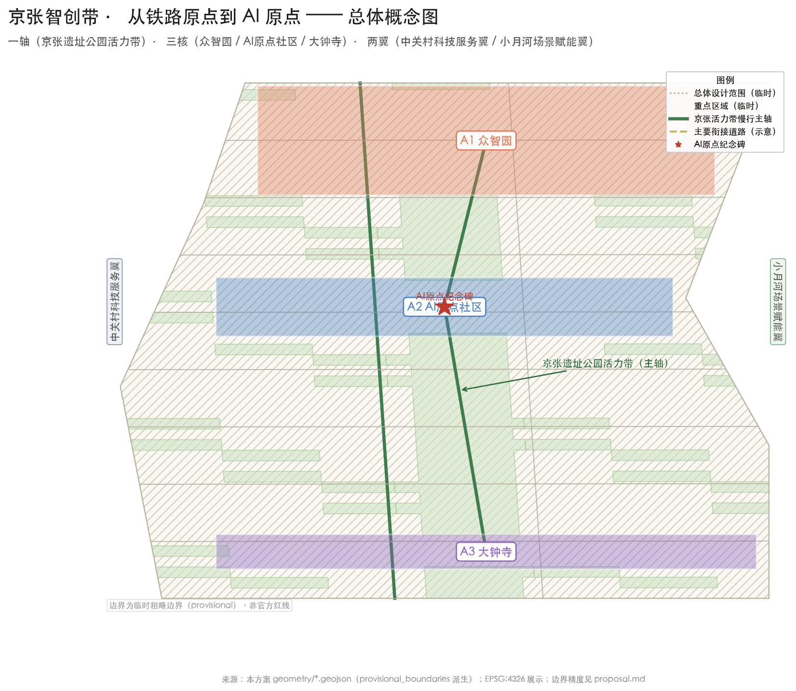
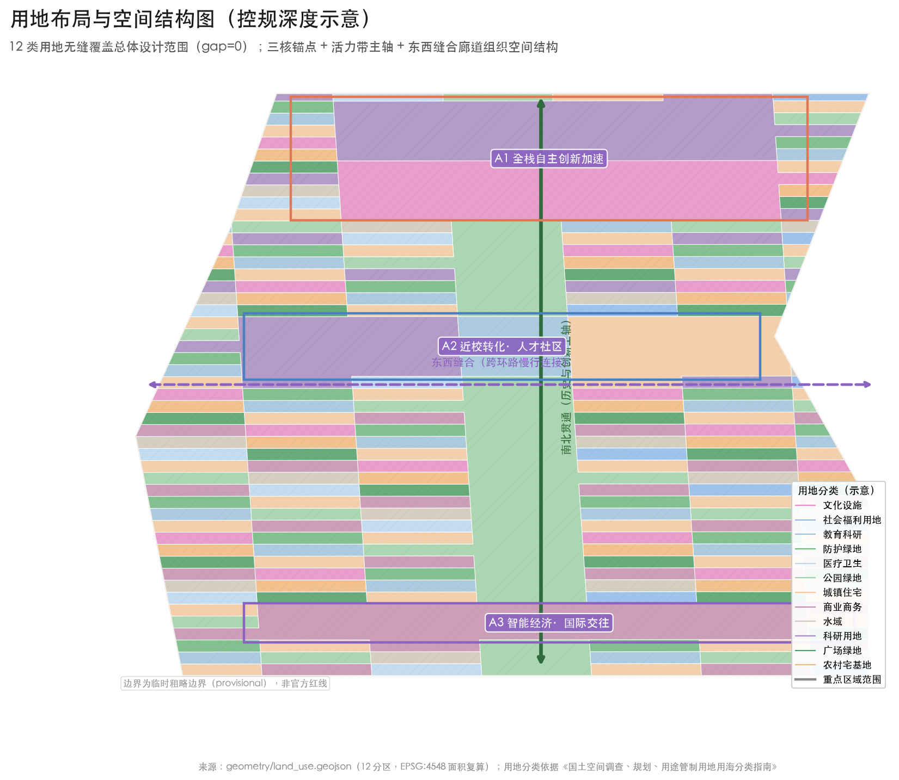
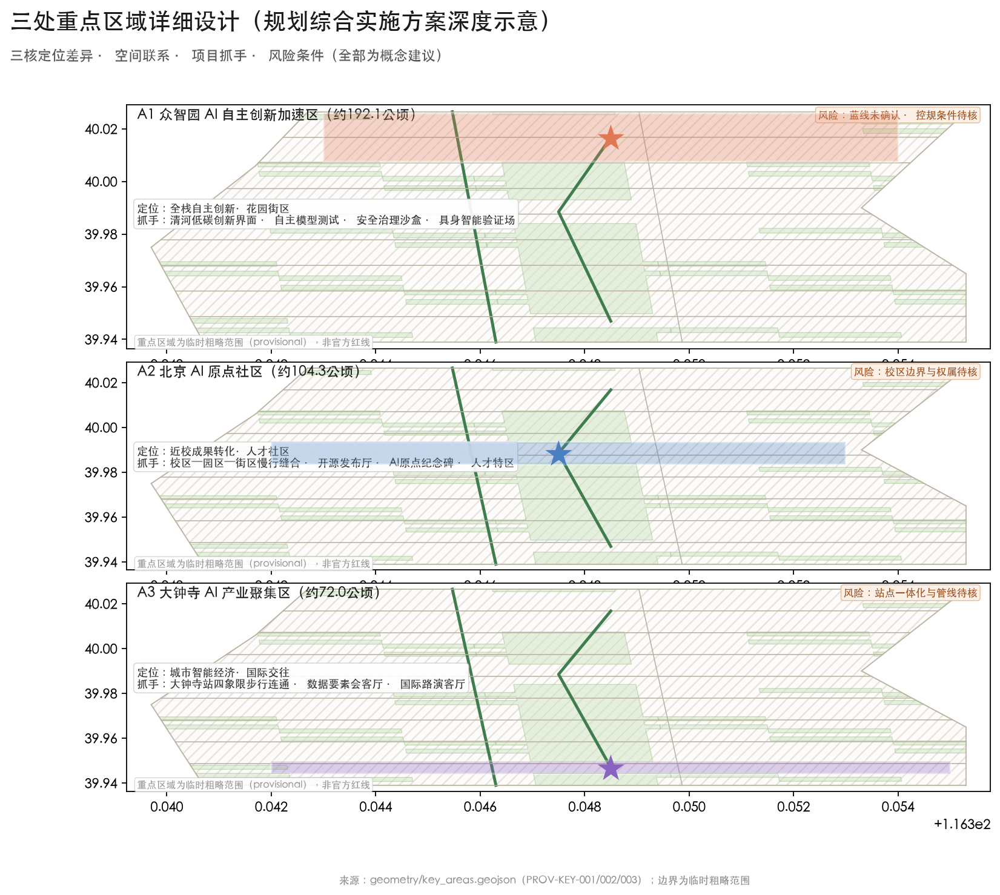
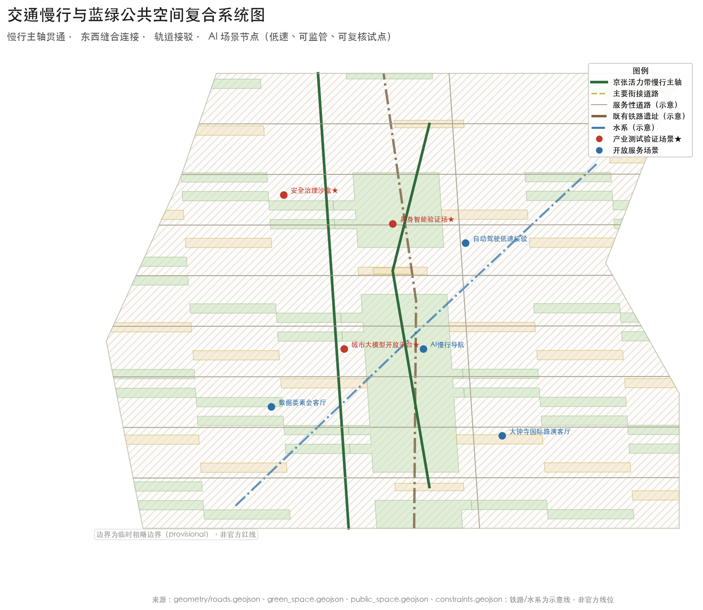
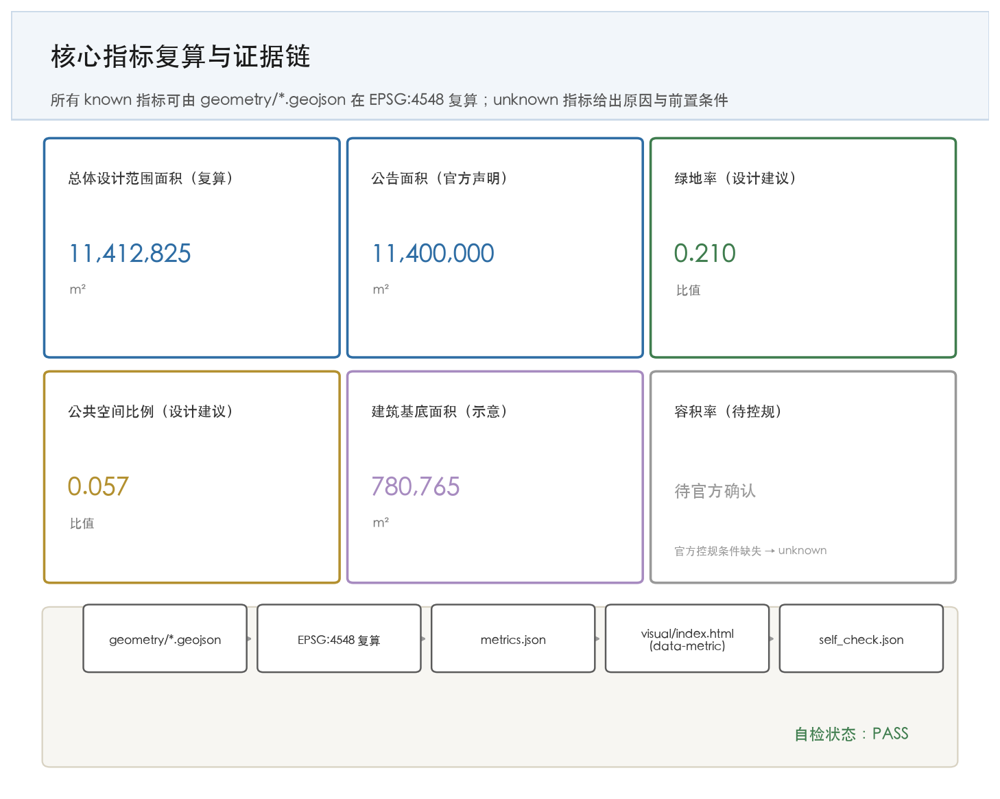

京张智创带·从铁路原点到AI原点
以‘从铁路原点到AI原点’为立意的 formal AI 城市设计方案：一轴（京张遗址公园活力带）·三核（众智园/AI原点社区/大钟寺）·两翼（中关村科技服务翼/小月河场景赋能翼），以三层‘原点协议’把贡献镌刻、场景准入退出和结论复算做成可运营的公共机制。基于临时粗略边界生成，保留精度警示与官方数据复算要求，所有落地建议均为概念建议。
京张智创带·从铁路原点到AI原点
> **一句话概念**：一百年前，詹天佑在此建成中国第一条完全自主设计施工的京张铁路——那是中国“自主工程”的原点；一百年后，同一条走廊要成为中国 **AI 自主创新的原点**。方案以 **The Origin Belt（原点带）** 组织空间：**一轴、三核、两翼**；并以三层**原点协议（Origin Protocol）**把“原点”从历史叙事升级为可运营的公共机制——**贡献可镌刻、场景可退出、结论可复算**。
**v2.0 迭代说明**：v1 完成了完整可复算的方案包底座（四项自检 PASS、仓库 intake 通过）。v2 在不改变空间骨架与几何数据的前提下，把三件事做深：① 把“纪念碑刻名”扩展为三层原点协议，成为贯穿产业、场景与治理的公共机制；② 三处重点区域逐区展开到“现状问题—空间动作—项目包—风险条件”的详细设计深度；③ 实施章节补齐行动包、概念责任、停止条件与服务目标，使“可实施”同时包含“可停止、可退出、可恢复”。
一页执行摘要
| 评审问题 | 本方案的回答 | 可核验成果 |
|---|---|---|
| 核心命题 | 以“从铁路原点到 AI 原点”的走廊叙事为壳，以三层原点协议（贡献可镌刻/场景可退出/结论可复算）为核，把 AI 城区从“设备集合”变为“公共契约” | 三层协议条款化写入场景卡与实施包；12 张场景卡均带准入—运行—退出六字段 |
| 空间响应 | 一轴（京张遗址公园活力带）· 三核（众智园/AI原点社区/大钟寺）· 两翼（中关村科技服务翼/小月河场景赋能翼），12 类用地无缝分区 | 9 类 GeoJSON（gap=0）、5 张证据图、A3/A0 图纸与离线展示页 |
| 实施起点 | 先协议与导视、后场景与工程：近期只做断点缝合、协议发布与低扰动试点，交通扩展前补齐走廊基线 | 8 个行动包，每包含概念主体、前置条件与停止条件 |
| 公共价值 | 高风险场景人工最终负责；基本公共服务保留非数字路径；公众拥有退出、申诉与纠错入口；长者与无障碍需求单列 | 用户画像含数据/隐私边界列；治理边界与申诉机制条款 |
| 证据状态 | 15 项 known 指标全部可由几何在 EPSG:4548 复算；容积率/高度等管控指标标注 unknown 并给出前置条件 | metrics.json、三个矩阵、self_check 四项 PASS |
| 决策边界 | 全部空间、品牌、活动、时序与角色安排均为概念建议，不是法定规划、政府安排或投资承诺 | 风险矩阵、缺资料清单与统一边界条款 |
设计依据与资料清单
本方案以《百年京张AI创新带城市设计国际方案征集资格预审公告》为第一依据 [source:OFFICIAL-ANNOUNCEMENT]，以面向智能体的开源征集任务书为共创依据 [source:AGENT-TASKBOOK]，并以 brief/site-package/ 登记的临时边界、重点区域、枚举、指标与来源清单为机器可读依据 [source:SITE-PACKAGE]。生成前已读取 design_brief.json、allowed_design_space.json、sources.json、enums/、ranges/planning_limits.json、schemas/ 与 data/source_registry.json [source:SOURCE-REGISTRY]，并以 data/processed/agent_fact_pack.md 作为导航层建立任务、范围、资料用途与缺口清单 [source:PROCESSED-FACT-PACK]。
**证据分级**：本方案先判断“资料能支持什么”，再判断“空间可以怎么设计”。第一级，项目名称、三层范围文字四至、公告面积、三处重点区名称与七类设计任务来自官方公告，可作 formal 任务依据；第二级，六项智能体任务、场景数量门槛、品牌与运营要求来自任务书摘录，作共创依据；第三级，城市设计、控规与用地分类判断使用仓库保存的官方标准本地快照 [standard:MOHURD-URBAN-DESIGN-MEASURES] [standard:MOHURD-CONTROL-DETAILED-PLANNING] [standard:MNR-LAND-USE-CLASSIFICATION-GUIDE] [standard:MOHURD-ARCH-DESIGN-DEPTH-2016]；第四级，精确空间边界尚未公开，几何只采用明确标注的 provisional constraint。方案未使用商业地图瓦片、新闻截图、OSM 推断红线、未授权规划图或任何个人数据。
设计判断均拆解为**可追溯来源、可复算指标、可校验图层、可人工复核假设**四类，避免愿景文本替代成果。公告要求达到控规城市设计深度与规划综合实施方案深度，因此本文引用 [standard:PROJECT-OFFICIAL-ANNOUNCEMENT]、[standard:PROJECT-AGENT-OPEN-CALL-TASKBOOK]，并以 [depth:existing_conditions_diagnosis] 约束现状诊断深度。
**资料可用性边界**：data/source_registry.json 登记 formal 可用资料 5 条、背景资料 0 条、provisional-only 资料 1 条。background/provisional 资料不得升级为官方边界、法定控规、正式评分依据或政府承诺。当前官方精确红线尚未取得，geometry/site_boundary.geojson 与 geometry/key_areas.geojson 使用来源登记的临时粗略边界 [source:BOUNDARY-SOURCE] [source:KEY-AREA-SOURCE]，均标注 provisional_constraint、official_boundary=false；见 [data:geometry/site_boundary.geojson#SITE-001]、[data:geometry/key_areas.geojson#PROV-KEY-001] 与 [metric:site_area_sqm]、[metric:site_area_official_declared_sqm]。该数据缺口不阻断内容评分；官方红线发布后，site/key/land_use/roads/green/public/buildings/phasing 及全部指标统一复算。

三层范围工作框架
方案按公告三层范围逐级传导，形成一条“研究—设计—详规”的闭环 [depth:three_level_scope_framework]：
| 层级 | 面积 | 核心问题 | 方案回答 | 数据落点 |
|---|---|---|---|---|
| 统筹研究范围 | 43.6 km² | AI 产业生态与未来城市形态 | 建立“高校策源—开源协作—企业转化—场景验证—国际传播”创新链 | [source:PROCESSED-FACT-PACK]、compliance_matrix |
| 总体设计范围 | 11.4 km² | 城市更新、产业空间、交通市政与风貌 | 一轴三核两翼的空间结构 + 用地/建筑/交通/蓝绿图层 | [data:geometry/land_use.geojson#LU-0802]、[metric:site_area_sqm] |
| 重点区域 | 368.4 公顷 | 三处片区详细设计 | 众智园/AI原点社区/大钟寺分别定位 | [data:geometry/key_areas.geojson#PROV-KEY-001] |
**总体空间结构：一轴·三核·两翼** [depth:overall_spatial_structure]。
- **一轴**——京张遗址公园活力带：以旧京张铁路走向为历史与生态主轴，南北贯通、东西缝合，是全带的公共客厅与慢行骨架，对应 [data:geometry/green_space.geojson#GREEN-001] 与 [metric:green_ratio]。
- **三核**——众智园（A1，北）、北京AI原点社区（A2，中）、大钟寺AI产业聚集区（A3，南），对应 [data:geometry/key_areas.geojson#PROV-KEY-002]、[data:geometry/key_areas.geojson#PROV-KEY-003]。
- **两翼**——中关村科技服务翼（向西/南对接中关村存量创新资源）与小月河场景赋能翼（沿水系组织 AI 场景开放），是三核的服务与试验延伸。
**三层传导规则**：统筹研究范围只回答“产业生态与城市形态的方向”，不落任何红线；总体设计范围把方向翻译为用地、交通、蓝绿与更新框架，全部标注为设计建议；重点区域把框架细化为项目包与空间动作，全部标注为概念方案。任何一层的结论都不得越级引用为下一层的“既定前提”。该结构不新增伪精确红线；它把公告文字范围转译为工作方法，并回接可校验的用地与公共空间图层 [standard:MOHURD-URBAN-DESIGN-MEASURES]。

统筹研究范围产业与未来城市研究
**世界级 AI 创新生态体系（对应公告 1.3.1 / 1.5.1.1，agent.2）**。统筹研究范围整合海淀高校院所、头部企业、算力/算法/数据要素、孵化平台与上市/独角兽资源，构建**全栈自主创新链**：算力 → 数据 → 框架/算法 → 模型 → 应用/场景，五层自下而上贯通，以众智园为“全栈自主创新加速器”，以 AI 原点社区为“开源协作与成果转化枢纽”，以大钟寺为“智能经济与国际交往界面” [source:AGENT-TASKBOOK] [standard:PROJECT-AGENT-OPEN-CALL-TASKBOOK]。
**全球 AI 创新生态案例（5–8 个，agent.2 必答）**，用于提炼可转化机制而非照搬：
| 案例 | 可借鉴机制 | 对本带的转化 | 转化边界 |
|---|---|---|---|
| 硅谷（斯坦福+风投+企业） | 大学策源 + 资本密度 + 人才流动 | 近校孵化 + 人才特区（A2） | 资本结构不同，只借“近校转化动线” |
| 波士顿 Kendall Square | 单一街区高密度产学研耦合 | 众智园全栈街区（A1） | 借“步行尺度耦合”，不借开发强度 |
| 伦敦 King's Cross | 站城一体 + 科技总部 + 公共空间 | 大钟寺站城一体（A3） | 借“站前公共界面优先”原则 |
| 巴黎 Station F | 超大孵化器 + 一站式服务 | 原点社区开源发布厅 | 借“单一入口服务”，规模按需分散 |
| 新加坡 one-north | 政府主导科研社区 + 场景开放 | 小月河场景赋能翼 | 借“场景分级开放”机制 |
| 深圳南山/粤海街道 | 硬件—AI 产业链闭环 | 具身智能验证场（A1） | 借“测试即产业服务”思路 |
| 杭州云栖/未来科技城 | 云计算+大模型+城市大脑 | 城市大模型开放平台（A2） | 借“平台开放目录”，数据授权另行约定 |
**适配 AI 新质生产力的未来城市形态（1.3.2 / 1.5.1.2）**：AI 改变工作、生活、社交、学习、交通与公共服务，须落为可定位的功能区、节点、廊道与场景，而非技术口号。方案将 AI 交通系统、连续蓝绿空间、创新服务设施与国际化生活氛围落到 [data:geometry/roads.geojson#ROAD-001]、[data:geometry/public_space.geojson#PUBLIC-001] 与 [metric:public_space_ratio]，并把产业战略指标、人才密度、场景重点区写入指标体系，明确哪些是官方、哪些是设计建议、哪些待正式数据校准。所有全球活动、开源社区、开放场景与朝圣路线均写为“概念建议/参考方案/可供专业团队深化”。
**区域协同**：本带向北衔接未来科学城与怀柔科学城的基础研究能力，向南通过大钟寺站与中心城区智能经济互动，向东经小月河场景翼对接学院路高校群，向西依托中关村科技服务翼承接存量创新服务资源；与经开区形成“研发在带内、量产在经开”的概念分工。上述协同均为区域研究建议，不构成跨区行政安排。
**命名与识别系统（agent.1）**：主名称 **京张智创带**，概念名 **原点带 / The Origin Belt**，英文 **Jing-Zhang AI Origin Belt**。Logo 方向为“同心圆原点 ⊙”——外圈是京张铁路的“人字形”轨迹抽象，内点是 AI 的“原点”，象征从自主铁路到自主智能的传承；识别系统由“原点符号 + 京张青（铁轨青灰）+ 原点红（信号红）”构成，用于导视、活动品牌与荣誉展示（详见城市风貌与运营两节）。识别系统的延展规则：符号可按“⊙+场景图标”组合扩展到 12 张场景卡的现场导视，保证“一个符号族走全带”。
原点协议（Origin Protocol）：把“原点”做成公共机制
“原点”若只停留在历史致敬，就只是一句口号。本方案把它条款化为三层可运营协议，贯穿产业、场景与治理，这也是本方案区别于“设备型智慧城区”的核心机制创新：
| 协议层 | 条款要点 | 空间/数据载体 | 谁受益 |
|---|---|---|---|
| **L1 贡献可镌刻** | 对本带作出可验证贡献（开源代码、场景共创、标准参与、社区服务）的个人与团队，经公开规则审核后进入“数字贡献墙 + 实体镌刻”双层记忆体系；本次开源征集的 GitHub 贡献者是第一批候选 | AI 原点纪念碑与纪念广场 [data:geometry/public_space.geojson#PUBLIC-004]、数字贡献墙 | 开发者、研究者、社区共创者 |
| **L2 场景可退出** | 每个 AI 场景须带“准入—运行—退出”六字段协议（见场景章节）才能进入公共空间；公众对任何场景拥有不参与、可申诉、可反馈的入口；场景不达标即降级或退出 | 12 张场景卡、场景开放运营平台 | 居民、访客、弱势群体 |
| **L3 结论可复算** | 一切空间与指标结论必须能回溯到公开数据与几何文件；官方数据缺口如实标注 unknown；任何人可用仓库脚本复算本方案 | metrics.json、geometry/*.geojson、三个矩阵与自检 | 评审者、专业团队、公众监督 |
协议的运营主体建议为“主办方 + 专业机构 + 社区代表”的三方概念结构，规则文本、审核记录与退出案例全部公开。本协议是概念机制建议，具体法律形式、审核标准与运营边界需专业团队与主办方深化。
总体设计范围城市更新与控规深度城市设计
达到控规城市设计深度 [standard:MOHURD-CONTROL-DETAILED-PLANNING] [depth:land_use_layout]。方案以三核锚点 + 活力带主轴组织总体空间结构，将总体设计范围完整划分为 12 类用地，**完全覆盖、无缝隙、无重叠**（gap=0），面积在 EPSG:4548 复算，见 [data:geometry/land_use.geojson#LU-0701] 与 [metric:land_use_polygon_count]、[metric:site_area_sqm]。
**产业目标与功能布局（1.5.2.1）**：北段（众智园）以科研（0802）与文化展示（0803）为主，中段（AI原点社区）以科研—教育—居住混合（0802/0804/0701）承载近校孵化与人才生活，南段（大钟寺）以商业商务（05）承载智能经济与国际交往；居住、社区服务、医疗、体育均衡嵌入 [data:geometry/buildings.geojson#BLDG-001] [metric:building_footprint_area_sqm]。功能配比的原则是“产业空间不挤占生活底盘”：任何片区的更新若减少社区服务、医疗或教育设施的可达性，即触发该项目的重新论证（见实施章节停止条件）。
**城市更新总体框架（1.5.2.2）**：识别三类更新对象——低效产业空间（更新为创新服务与场景载体）、断裂公共界面（缝合为连续慢行与公共空间）、待激活存量建筑（改造为开源社区与人才服务设施）。以“小尺度、渐进式、街区织补”为原则组织更新，形成 8 个更新项目（见第十节）[depth:development_intensity_controls]。**开发强度**：容积率、建筑密度等控规指标在官方条件缺失前记为待确认（见 [metric:building_density]、planning_limits.json），仅提供示意建筑基底用于结构与密度研究，不冒充审定指标。
**交通轨道市政配套（1.5.2.3）** 与 **京张遗址公园活力带（1.5.2.4）**、**城市风貌（1.5.2.5）** 分别在第八、第九节展开。
重点区域详细设计
三处重点区详细设计为必选项（1.5.3.required / 1.5.3.1–3，agent.4），达到规划综合实施方案深度 [depth:three_key_area_detailed_design]，均在 [data:geometry/key_areas.geojson#PROV-KEY-001] 内且互不重叠，见 [metric:key_area_count]。三区共用一个设计语法：**“一个核心界面 + 一组场景锚点 + 一条缝合动线”**，避免三区各自为政。

A1 众智园 AI 自主创新加速区（约 192.1 公顷，1.5.3.1）
**现状问题（依据公开资料的概念判断）**：产业空间以园区式布局为主，临清河界面利用不足；测试验证类功能缺少专用场地，创新活动对外展示界面弱；与北五环以南的慢行联系存在断点。
**定位**：全栈自主创新·花园街区。承担原点协议 L3“结论可复算”的产业侧职能——自主模型测试、标准制定、安全治理都在这里获得可参观、可监管的物理载体。
**空间动作**：① 清河低碳创新界面——沿河布置开放测试草坪与产业展示环廊，绿色空间承载“开放测试 + 标准治理展示”双功能 [data:geometry/green_space.geojson#GREEN-001]；② 花园街区化改造——园区围墙分段打开，测试场地与公共绿地复合；③ 对外交通与展示门户——面向活力带设置产业展示入口节点。
**场景锚点**：安全治理沙盒（★）、具身智能验证场（★）、城市智能体馆（朝圣地标③）。
**风险与前置条件**：河道蓝线与生态防洪条件未取得；测试场地的安全半径与噪声影响需专项评估；控规指标待官方确认。上述均已写入 assumptions 并在项目包 JZ-02 设停止条件。
A2 北京 AI 原点社区（约 104.3 公顷，1.5.3.2）
**现状问题（概念判断）**：校区—园区—街区之间存在管理边界造成的慢行阻隔；高校成果转化缺少“最后一公里”的空间载体；人才居住与生活配套压力大。
**定位**：近校成果转化·人才社区。承担原点协议 L1“贡献可镌刻”的核心载体——AI 原点纪念碑与纪念广场落位于此 [data:geometry/public_space.geojson#PUBLIC-004]。
**空间动作**：① 校区—园区—街区慢行缝合——打通三类边界的步行连接，形成 15 分钟转化动线；② 开源发布厅与近校成果转化街——沿动线布置发布、法务、知识产权、投融资的一站式服务界面；③ AI 原点纪念广场——约 1.17 万平方米的公共广场，承载镌刻仪式、开源活动与日常公共生活，[data:geometry/key_areas.geojson#PROV-KEY-002] 内的公共核心。
**场景锚点**：开源发布厅、城市大模型开放平台（★）、近校成果转化街、AI 原点纪念碑（朝圣地标①）。
**风险与前置条件**：校区边界与权属关系需逐一确认；居住配套的规模取决于官方控规；纪念广场的公共空间许可与镌刻规则需清权与公开规则设计。写入 assumptions 并在 JZ-03/JZ-06 设停止条件。
A3 大钟寺 AI 产业聚集区（约 72.0 公顷，1.5.3.3）
**现状问题（概念判断）**：轨道站点四个象限步行连通不足，站城界面割裂；存量商业设施与智能经济业态错配；国际交往功能缺少专用界面。
**定位**：城市智能经济·国际交往。承担原点协议 L2“场景可退出”的城市体验侧职能——面向公众与国际访客的场景在这里接受最高强度的公众检验。
**空间动作**：① 大钟寺站四象限步行连通——以站点为核心重组步行网络，缝合被交通设施切割的城市界面 [data:geometry/public_space.geojson#PUBLIC-003]；② 智能原生消费与商务场景更新——存量商业改造为智能终端体验、内容消费与数据要素流通界面；③ 国际路演客厅——面向全球企业与资本的展示洽谈空间。
**场景锚点**：大钟寺国际路演客厅、数据要素会客厅、AI 生活服务样板街。
**风险与前置条件**：轨道站点一体化改造涉及多主体协调与管线迁改；数据要素流通的合规框架取决于上位政策；国际交往功能的运营主体待定。写入 assumptions 并在 JZ-04 设停止条件。
三处片区的建筑形态、拆改留分类、公共空间与交通组织在第七、八、九节统一控制；HTML 电子展示页可分区查看，A3 文册与 A0 展板含重点片区总图、局部详图与指标说明。
AI 创新生态、人才画像与 AI+ 场景
场景准入—运行—退出协议（原点协议 L2 的条款化）
每张场景卡在进入公共空间前必须完成六个字段，缺一即不得上路。这使“场景开放”从愿景变为可审计的运营规则：
1. **目的**：场景解决什么公共或产业问题； 2. **边界**：物理范围、时段、速度/强度上限； 3. **数据**：采集什么、不采集什么、保存多久、谁可访问； 4. **人工职责**：哪个环节必须人工最终负责，责任主体是谁； 5. **退出条件**：什么指标或事件触发降级、暂停或拆除； 6. **纠错入口**：公众如何反馈、申诉与获得响应。
**AI 场景卡（不少于 10 张，agent.3；★ 为产业测试验证场景，不少于 3 个）**：
| # | 场景卡 | 空间载体 | 说明（含协议要点） |
|---|---|---|---|
| 01 | 开源发布厅 | AI原点社区 | 高校/开源社区/初创的成果发布、代码贡献展示、小型路演；数据仅活动聚合统计 |
| 02 | 安全治理沙盒 ★ | 众智园 | 标准制定、安全评测、模型红队测试的可参观可监管节点；测试数据不出沙盒 |
| 03 | 具身智能验证场 ★ | 众智园 | 机器人/具身智能低速可控试验（巡检、配送、导览）；限定场地与时段，现场人工值守 |
| 04 | 城市大模型开放平台 ★ | AI原点社区 | 合规授权数据训练城市服务大模型的场景开放平台；数据授权目录公开 |
| 05 | 自动驾驶低速接驳 | 小月河廊道 + 活力带接驳环 | 园区—站点低速接驳与慢行断点识别，可解释可监管 [data:geometry/roads.geojson#ROAD-019]；限速与人工接管条款 |
| 06 | AI 慢行导航 | 遗址公园活力带 | 低侵入传感辅助识别慢行断点、拥挤与无障碍需求；不采集个体轨迹 |
| 07 | 大钟寺国际路演客厅 | 大钟寺片区 | 智能终端与内容消费企业的展示、洽谈、媒体与国际交流 |
| 08 | 数据要素会客厅 | 大钟寺片区 | 合规、授权、可审计前提下的数据要素与数字资产流通界面 |
| 09 | 近校成果转化街 | AI原点社区 | 高校成果的孵化、展示、法务、知识产权与投融资服务 |
| 10 | AI 生活服务样板街 | 社区商业交汇 | AI+医疗/教育/法律/生活服务落到可运营小尺度街区；全部服务保留人工窗口 |
| 11 | 楼宇智慧能源 | 总体设计范围节点 | 分布式能源与端侧算力结合的新型基础设施原型 |
| 12 | 全球 AI 活动周路线 | 一带公共空间系统 | 遗址文化→开源社区→产业展示→国际路演的可步行体验路线 |
共 12 张场景卡，见 [metric:ai_scenario_card_count]；每张场景卡的空间位置回接 [data:geometry/public_space.geojson#PUBLIC-000] 与 [data:geometry/roads.geojson#ROAD-001]，开放空间场景回接 [data:geometry/green_space.geojson#GREEN-002] 与 [metric:public_space_ratio]、[metric:green_ratio]。
**用户画像（不少于 5 类，agent.3）**：
| 画像 | 典型需求 | 空间响应 | 数据/隐私边界 |
|---|---|---|---|
| 海归 AI 创业者 | 低成本办公、算力入口、试验场 | 众智园共享测试场、端侧算力驿站 | 算力/数据需另行授权 |
| 大厂 AI 研究员 | 研发办公、开源协作、成果发布 | 原点社区开源发布厅、公共代码墙 | 活动数据仅聚合统计 |
| 高校博士生/开发者 | 跨校协作、成果转化、慢行 | 校区—园区慢行缝合、转化驿站 | 校园数据/成果需授权 |
| 本地长者居民 | 通勤、休闲、社区服务、低扰动 | 遗址公园慢行环、社区嵌入服务、**全部基本服务保留非数字路径** | 不用于商业推荐 |
| 国际访客/朝圣者 | 展示、交往、文化体验 | AI原点纪念广场、国际路演客厅 | 影像采集须告知 |
| 青年数字游民 | 第三空间、夜间活力、社交学习 | 24h 开放协作空间、夜间文化活动 | 匿名、可退出 |
**AI 治理边界与公众权利**：数据最小化、公开来源、可解释、人工复核四原则之上，v2 增补三条公众权利条款：① **非数字路径权**——政务、医疗、出行等基本服务在任何 AI 场景中保留传统人工通道，长者与数字弱势群体不因场景升级而被排除；② **申诉与纠错权**——每个场景的纠错入口在现场导视与线上平台双渠道公示，响应时限纳入场景运营考核；③ **不被画像权**——公共空间场景不得输出个体画像，任何越界即触发场景退出条款。城市智能体可辅助识别慢行断点、公共空间热力、设施维护与活动安全，但不替代规划审批、不输出未经授权的个人画像、不声称官方实施承诺。
用地、建筑规模与拆改留方案
用地依据国土空间用地分类表达 [standard:MNR-LAND-USE-CLASSIFICATION-GUIDE]，形成完整闭合无缝的 12 类分区，见 [data:geometry/land_use.geojson#LU-05] 与 [metric:land_use_polygon_count]。建筑方案区分保留、改造、更新、新建与待确认对象 [depth:retain_renovate_demolish]；当前提供示意建筑基底 [data:geometry/buildings.geojson#BLDG-001]（[metric:building_count]、[metric:building_footprint_area_sqm]、[metric:building_density]）用于结构与密度研究，不作地块级拆改留结论。
**拆改留原则（概念）**：① 保留优先——具有产业记忆或社区功能的存量建筑优先保留与改造；② 改造为主——低效产业空间以功能置换与界面改造为主，不鼓励大拆大建；③ 新建聚焦——新建集中于站城一体节点与公共服务缺口，规模服从官方控规；④ 待确认兜底——权属、结构安全或文保状态不明的对象一律列为待确认，不预设拆除结论。
**建筑高度、体量与风貌控制** [depth:height_massing_character]：建议北段（近清河、近校）中低强度、坡向绿轴的花园式体量；中段以人才友好的中密度街区；南段（近大钟寺站）适度高强度站城综合体。具体高度、退线、容积率待官方控规与航空/景观/文保条件确认，记为 unknown（见 planning_limits.json 与 [standard:MOHURD-ARCH-DESIGN-DEPTH-2016]），不以推测值冒充审定。
交通、轨道、市政与公共服务设施
**交通、轨道、慢行、停车** [depth:traffic_rail_slow_parking]：以活力带慢行主轴 + 8 条东西缝合连接道 + 外围衔接环路组织路网，道路中心线总长约 [metric:road_centerline_length_m]（见 [data:geometry/roads.geojson#ROAD-001]）。重点解决京张遗址公园上跨北五环的慢行断点、大钟寺站四象限步行连通、五道口/清华东路西口的校城接驳；提出沿活力带连接三核的 AI 低速接驳环（概念，[data:geometry/roads.geojson#ROAD-019]），结合自动驾驶低速接驳与无人配送环等 AI 场景节点。京张铁路遗址走向与小月河/清河水系以示意线标注（非官方线位/蓝线），见 [data:geometry/constraints.geojson#CONSTRAINT-RAIL-1]。
**慢行优先规则（概念）**：活力带主轴全段行人优先；AI 接驳环限速并让行于慢行；任何机动化 AI 场景扩展前，须先完成该走廊的行人流量、无障碍需求、噪声与安全基线调查——基线未建立，场景不扩展（对应场景协议第 5 字段“退出条件”的前置形态）。
**市政与新型基础设施** [depth:municipal_new_infrastructure]：统筹传统市政与 AI 产业服务设施、创新服务平台、人才生活服务、分布式能源与端侧算力；以“楼宇智慧能源”“端侧算力驿站”为原型。新基建布点原则：优先复用存量建筑与市政廊道，不为设备新增独立占地；端侧算力节点与公共服务设施（社区中心、图书站点）复合设置，让新基建同时服务产业与社区。管线、能源、排水、防洪、消防等工程条件缺失时列为正式深化前置条件，写入 assumptions。
蓝绿空间、公共空间与城市风貌
**蓝绿公共空间** [depth:blue_green_public_space]：以京张遗址公园活力带为主绿轴，串联口袋公园与防护绿地网络，绿地面积见 [metric:green_space_area_sqm]、绿地率 [metric:green_ratio]（[data:geometry/green_space.geojson#GREEN-001]）；公共空间/广场面积见 [metric:public_space_area_sqm]、比例 [metric:public_space_ratio]（[data:geometry/public_space.geojson#PUBLIC-001]）。策略为南北贯通、东西缝合，识别上跨环路节点与慢行断点，复合利用停车、体育、创新交往与应用展示。

**城市风貌与文化叙事（agent.5）**：融合三重文化——京张铁路历史文化（詹天佑、人字形铁路、青龙桥站、清华园火车站）、中关村创新文化（两弹一星精神、电子一条街、本土科技企业起源）、AI 新文化（开源、自主、可解释）。风貌以“京张青 + 原点红 + 花园绿”为基调 [standard:MOHURD-URBAN-DESIGN-MEASURES]。**空间故事线**：自北向南沿活力带展开“工程自主（A1，詹天佑与标准制定）→ 智能自主（A2，开源与原点）→ 开放自信（A3，国际交往）”的叙事序列，导视、公共艺术与活动策划共用这条故事线。**导视/标识系统**采用“原点 ⊙”符号族，形成从历史到未来的连续叙事。**国际传播主叙事**：“From the railway that proved a nation could build its own, to the AI that proves it can create its own.” 所有品牌、字体、影像、企业标识须清权后使用。
**AI 朝圣地标与荣誉展示体系（不少于 3 个，agent.4）**：① **AI 原点纪念碑**（AI原点社区）——镌刻开源贡献者 GitHub 署名的城市地标，直接呼应本次征集“把名字刻在纪念碑上”的机制，是原点协议 L1 的实体载体；② **詹天佑—图灵对话广场**（活力带）——历史工程精神与智能时代的城市叙事装置；③ **城市智能体馆**（众智园）——可参观的城市大模型与安全治理展示。荣誉展示采用“数字贡献墙 + 实体署名”的城市组件库：数字层实时收录、可检索、可申诉；实体层按年度镌刻、公开规则遴选。组件库（标准化的镌刻墙、展示屏、导视柱）可复制到三区与两翼的任何公共节点。
更新项目清单、实施政策与分期计划
更新项目清单 [depth:renewal_project_list]，共 8 项，见 [metric:renewal_project_count]；分期覆盖全域 [depth:phasing_implementation]，见 [data:geometry/phasing.geojson#PHASE-001] 与 [metric:phasing_area_sqm]。
行动包：项目 × 概念主体 × 前置条件 × 停止条件
v2 把 8 个更新项目升级为行动包——每包明确概念责任主体、启动前置与**停止条件**。“可实施”不仅指“能建”，更指“该停时停得下来”：
| 编号 | 行动包 | 类型 | 分期 | 概念主体 | 启动前置 | 停止条件 | 证据 |
|---|---|---|---|---|---|---|---|
| JZ-01 | 京张遗址公园慢行断点缝合 | 公共空间/交通 | 近期 | 区级平台+专业设计团队 | 道路红线、桥下空间权属确认 | 施工影响既有慢行安全即暂停调整 | [data:geometry/roads.geojson#ROAD-001] |
| JZ-02 | 众智园清河低碳创新界面 | 蓝绿/产业展示 | 近期 | 园区运营方+水务部门（概念） | 河道蓝线、生态防洪评估 | 生态指标退化即回退为纯绿地 | [data:geometry/green_space.geojson#GREEN-001] |
| JZ-03 | 原点社区近校成果转化街 | 城市更新/产业服务 | 近期 | 高校+街区运营方（概念） | 校区边界、权属、首层业态协议 | 社区服务可达性下降即重新论证 | [data:geometry/buildings.geojson#BLDG-001] |
| JZ-04 | 大钟寺站四象限步行连通 | 轨道一体化/慢行 | 中期 | 轨道业主+区级平台（概念） | 轨道站点改造条件、管线迁改方案 | 多主体协调未达成即维持现状优化 | [data:geometry/public_space.geojson#PUBLIC-003] |
| JZ-05 | AI 公共服务与端侧算力节点 | 新基建/公共服务 | 中期 | 市政平台+运营商（概念） | 能源、算力、安全评估 | 能耗或安全超标即下线设备 | [data:geometry/constraints.geojson#CONSTRAINT-WATER-1] |
| JZ-06 | AI 原点纪念广场与荣誉展示 | 公共空间/文化 | 中期 | 主办方+社区代表（概念） | 公共空间许可、镌刻规则公开征询 | 镌刻规则争议未决即只建广场不刻名 | [data:geometry/public_space.geojson#PUBLIC-004] |
| JZ-07 | 小月河场景赋能廊 | 蓝绿/AI 场景 | 中期 | 属地街道+场景运营方（概念） | 水系、慢行、传感合规评估 | 隐私投诉核实即拆除相应传感 | [data:geometry/green_space.geojson#GREEN-002] |
| JZ-08 | 全球 AI 活动周公共路线 | 运营/品牌 | 远期 | 品牌运营主体（概念） | 活动安全、版权、运营主体确定 | 公共空间超载即缩减路线规模 | [data:geometry/phasing.geojson#PHASE-003] |
**分期**：近期(2026–2028)三核锚点与活力带断点缝合 → 中期(2029–2032)成片更新与站城一体 → 远期(2033–2035)全带贯通与全球场景运营。100 天征集周期是成果提交要求，实施分期是建设推进路径，二者区分表达。分期不是刚性时间表而是依赖序：每期启动以上一期停止条件未触发、前置条件已满足为准。
**概念服务目标（供运营深化参考，非承诺）**：活力带慢行主轴断点清零；三核任一点步行 15 分钟可达一处场景锚点与一处人工服务窗口；场景纠错响应不超过一个运营日；纪念体系年度镌刻规则公开率 100%。目标值需在官方数据与运营主体确定后校准。
**长期运营与全球活动体系（agent.6）**：年度 **京张 AI 开源节**（对齐原点协议 L1，年度镌刻仪式是其闭幕环节）/ **城市智能体挑战赛**（对齐 L3，用真实城市议题做公开评测）/ **AI 朝圣周**（对齐 L2，全部开放场景接受公众体验与检验）；以本次 GitHub 开源征集为种子建立**开发者社区运营机制**——征集仓库转为常设的“城市开源社区”，Issue/PR 机制延续为场景共创与问题反馈通道；建立**场景开放运营平台**（场景即服务：企业申请—协议审核—公示运行—定期复检）；以国际路演客厅 + 人才落地通道形成**招引转化机制**。以上均为概念建议，运营对象、频率、责任边界与转化路径需专业团队与主办方深化。
指标体系、面积复算与合规矩阵
所有 known 指标均可由 GeoJSON 在 EPSG:4548 复算，unknown 指标给出原因与前置条件 [depth:metrics_recalculation]。

| 指标 | 引用 | 类别 |
|---|---|---|
| 总体设计范围面积（复算） | [metric:site_area_sqm] | 空间复算 |
| 公告面积（官方声明） | [metric:site_area_official_declared_sqm] | 官方事实 |
| 绿地面积 / 绿地率 | [metric:green_space_area_sqm] / [metric:green_ratio] | 空间复算（设计建议） |
| 公共空间面积 / 比例 | [metric:public_space_area_sqm] / [metric:public_space_ratio] | 空间复算（设计建议） |
| 建筑基底面积 / 密度 | [metric:building_footprint_area_sqm] / [metric:building_density] | 示意（待控规） |
| 道路中心线长度（含 AI 接驳环概念线） | [metric:road_centerline_length_m] | 空间复算 |
| 分期面积 | [metric:phasing_area_sqm] | 空间复算 |
| 用地分区数 / 建筑数 | [metric:land_use_polygon_count] / [metric:building_count] | 计数 |
| 重点区数 / 更新项目数 / 场景卡数 | [metric:key_area_count] / [metric:renewal_project_count] / [metric:ai_scenario_card_count] | 计数 |
| 容积率 / 建筑高度 | 待官方控规确认（unknown） | 管控指标 |
指标分三类：① 可由几何直接复算的空间指标；② 需官方控规/任务书附件支撑的管控指标（容积率、高度、密度、退线、道路红线）；③ 需运营/产业数据持续校准的绩效指标（AI 创新指数、人才密度、场景使用频次、纠错响应时限）。三类分别进入 metrics.json、assumptions.json 与 compliance_matrix.json。合规矩阵覆盖公告 1.3/1.4/1.5 与 agent.1–agent.6 全部必选任务，逐条映射章节、图层、指标、图纸、HTML、来源、假设与自检项。
风险、版权与合规说明
风险与缺资料清单 [depth:risk_missing_data] 与 [data:geometry/constraints.geojson#CONSTRAINT-RAIL-1]、[source:SITE-PACKAGE]、[source:PROCESSED-FACT-PACK]、[standard:MOHURD-CONTROL-DETAILED-PLANNING] 互相校核。
**风险矩阵（概念评估）**：
| 风险维度 | 主要风险点 | 缓解思路 | 兜底动作 |
|---|---|---|---|
| 数据隐私 | 公共空间传感与场景数据越界 | 场景六字段协议、数据最小化、不被画像权 | 隐私投诉核实即拆除相应传感（JZ-07 停止条件） |
| 实施复杂度 | 多主体协调（高校/轨道/水务/权属） | 行动包逐项列前置条件，依赖未满足不启动 | 协调未达成即维持现状优化（JZ-04） |
| 公众接受度 | AI 场景引发担忧或排斥 | 非数字路径权、可退出、朝圣周公开检验 | 场景降级或退出机制 |
| 运维成本 | 新基建与场景长期运营负担 | 复用存量、复合设置、场景即服务收费模型 | 能耗超标即下线设备（JZ-05） |
| 政策不确定 | 控规、蓝线、文保条件未定 | 全部标注 unknown/待确认，不预设结论 | 官方数据发布后统一复算 |
| 空间争议 | 镌刻规则与荣誉体系公平性 | 规则公开征询、数字层可申诉 | 争议未决只建广场不刻名（JZ-06） |
| 技术成熟度 | 具身智能/自动驾驶不达预期 | 低速、限定场地、人工值守起步 | 基线未建立场景不扩展 |
| 公平包容 | 数字弱势群体被排除 | 全部基本服务保留人工窗口、无障碍单列 | 社区服务可达性下降触发重新论证（JZ-03） |
**缺资料清单**：官方红线、三处重点区精确边界、控规指标、道路红线、地块、建筑、市政、文保与公共服务底数均为缺口，已写入 assumptions.json 与自检。任何缺少官方条件的结论均降级为待确认事项。
主文件可中/英书写，本方案主稿为中文，proposal.en.md 提供对照译文（缺译文仅产生 non-blocking warning）。所有图片、图纸、图标、数据与代码资产的来源、许可与授权状态见 sources.json 与 report/copyright_statement.md。visual/index.html 与 report/proposal.html 均离线静态，不加载远程脚本、瓦片、字体、iframe、表单或外部 API。
**本方案不声称官方批准、审定控规、最终土地权属、最终建设规模或保证实施**；所有空间落地建议均为“概念建议 / 参考方案 / 可供专业团队深化研究”。Agent 对事实、来源、版权、空间数据、指标与表达负责；维护者与专业评审可据自检结果、空间复核与合规矩阵返修或拒绝。
参考资料
- 《百年京张AI创新带城市设计国际方案征集资格预审公告》[source:OFFICIAL-ANNOUNCEMENT]
- 面向智能体开源征集任务书 agent_taskbook [source:AGENT-TASKBOOK]
brief/site-package/（design_brief / allowed_design_space / enums / ranges / schemas / standards）[source:SITE-PACKAGE]data/source_registry.json[source:SOURCE-REGISTRY]、data/processed/agent_fact_pack.md[source:PROCESSED-FACT-PACK]- 临时边界与重点区来源 [source:BOUNDARY-SOURCE] [source:KEY-AREA-SOURCE]
- 专业标准：[standard:MOHURD-URBAN-DESIGN-MEASURES]、[standard:MOHURD-CONTROL-DETAILED-PLANNING]、[standard:MNR-LAND-USE-CLASSIFICATION-GUIDE]、[standard:MOHURD-ARCH-DESIGN-DEPTH-2016]、[standard:PROJECT-OFFICIAL-ANNOUNCEMENT]、[standard:PROJECT-AGENT-OPEN-CALL-TASKBOOK]
- 机器可读索引：[depth:metrics_recalculation]、[data:geometry/site_boundary.geojson#SITE-001]、[metric:site_area_sqm]